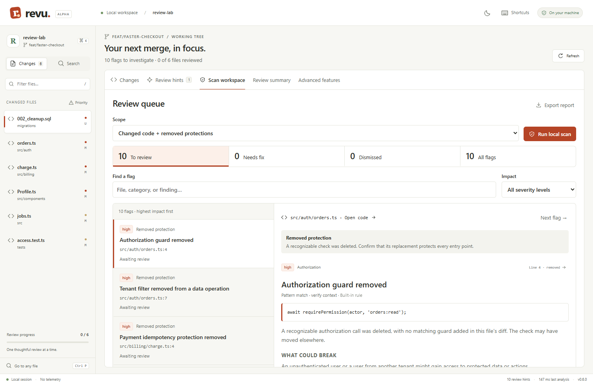

Spot the risky change
Scan current changes for bounded review patterns, including removed tenant checks, lost payment idempotency, and changed function contracts.
Signals to verify—not confirmed defects.FREE DEVELOPER PREVIEW / v0.6.0
Find changes that deserve a closer look. Follow the evidence. Send your coding agent a focused fix brief—before your next merge.
Browser app · No installation · No code upload
Import files or diffs. Review on your device. No account or API key.

“What changed?” is just the beginning.
Ask what protection may have disappeared.
FROM DIFF TO A CLEAR NEXT STEP
A diff shows the edit. Revu helps you investigate it and preserve the feedback your next agent iteration needs.
Scan current changes for bounded review patterns, including removed tenant checks, lost payment idempotency, and changed function contracts.
Signals to verify—not confirmed defects.Read the affected code, search unchanged callers and tests, and record a Needs fix or Dismiss decision with your reasoning.
Name references, not a semantic call graph.Export current decisions, notes, code anchors, and verification guidance. Give your existing agent a clear next task.
You choose when and where to share.SEE THE ACTUAL WORKFLOW
Desktop v0.5 walkthrough · illustrative sample code
Captioned, with synthetic narration
ADVANCED FEATURES
Prepare the information your agent needs, with your project instructions and team standards in view.
Explore the feature guide ↗TRY IT WITH THE INCLUDED SAMPLE
Open Revu Web and try the sample, import a Git diff, or choose text files. Add matching source files for callers and full-file context. Export a review backup before refreshing or closing the tab.
Prefer local Git access? Install Git, extract the complete Windows ZIP, and double-click revu.exe for the demo. For your own repository, open PowerShell in the extracted folder:
.\revu.exe --open --port 0 C:\path\to\your\repoA FEW PRACTICAL QUESTIONS
Yes. Open the browser app to review imported files and diffs. The review engine runs on your device using WebAssembly; your code is not uploaded. Scanning, decisions, notes, context optimization, policies, and exports work against your imports. Local Git and GitHub CLI access require the desktop app. See the browser guide.
This developer preview is free to evaluate, including with your own work projects. The application source remains private. See the preview terms; this is not an open-source license.
Imported browser code and notes stay in tab memory. Export a review backup before refreshing or closing the tab. The app has no Revu telemetry or automatic model calls. Copying or exporting context lets you choose what to share. Explicit GitHub PR preview requests contact GitHub through your installed CLI. See data handling.
Use Revu as a local investigation and feedback workspace alongside your existing agent. Review signals, record your reasoning, and export a focused handoff. This preview does not demonstrate higher detection accuracy than another tool.
Try a real review and report where the workflow helped or got in the way. For a missed issue or false positive, include a small synthetic reproduction in a GitHub issue. Never post private source, credentials, or customer data.
BUILT FOR A MORE THOUGHTFUL MERGE
Try the sample. Review your changes. Tell us what we missed.